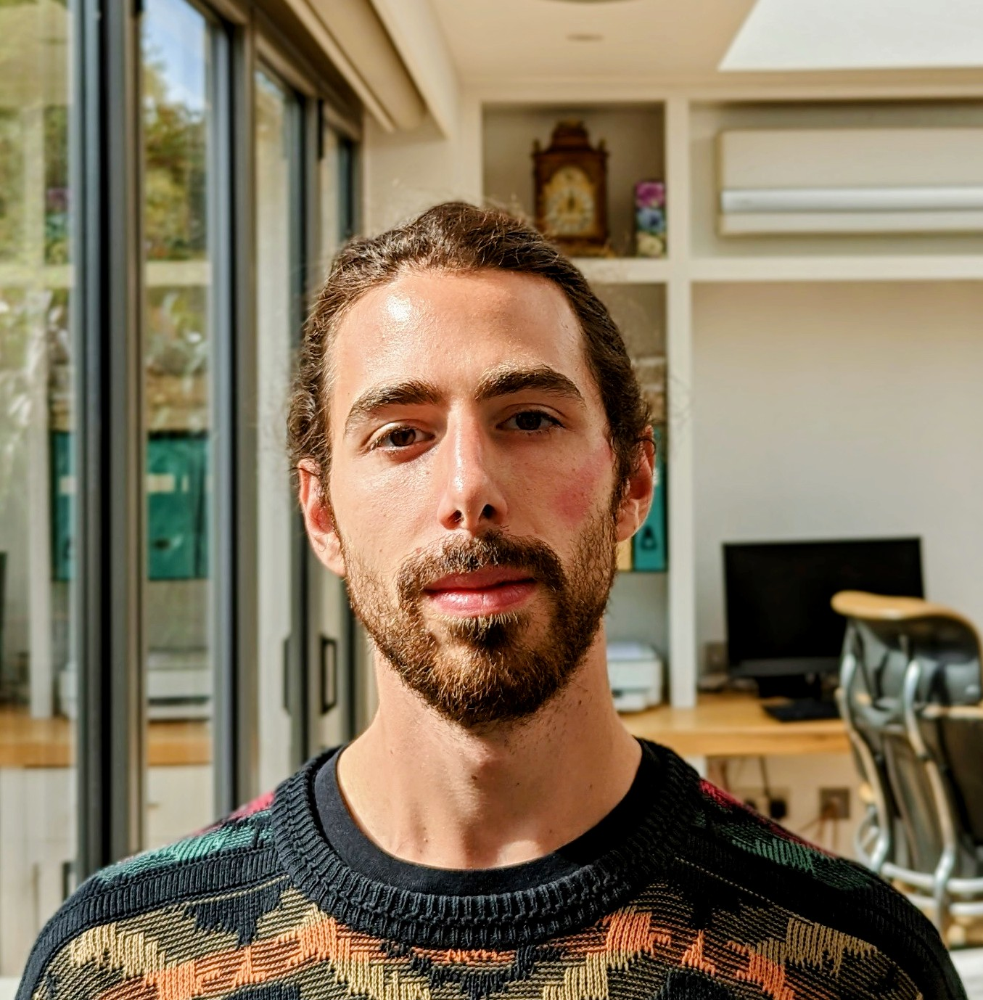

Freddie Martin
Ph.D. in Protein Design · Senior Scientist @ Schrödinger

About
My passion is to use advances in AI and a rational understanding of atomic interactions to develop new knowledge, tools, and therapies. I started out interested in small-molecule drug discovery, which led me to research the sequence-to-structure relationships dictating a protein's final fold, and how to design new protein–protein interactions and novel protein architectures to deliver new technologies and treatments for disease.
Experience
Senior Scientist I
Postdoctoral Research Associate
Postdoctoral Research Associate
PhD Candidate · Woolfson Lab
Industrial Placement Student · DMPK / BST
Education
University of Bristol
University of Bath
Selected Publications
Validation and analysis of 12,000 AI-driven CAR-T designs in the Bits to Binders competition
bioRxiv · de novo binders · CAR-T · benchmarking
A global competition benchmarking de novo binder design as CAR-T binding domains against human CD20. 12,000 designs from 42 countries were screened by pooled CAR-T proliferation, with retrospective filters nearly doubling success rates.
Structure of a contractile injection system in Salmonella enterica subsp. salamae
bioRxiv · cryo-EM · bioinformatics
High-resolution cryo-EM structure of an extracellular contractile injection system, revealing a unique sheath architecture and a previously unannotated cluster of CISs. Contributed bioinformatic analysis and wet-lab support.
Full publication list on Google Scholar and ORCID.
Projects
BioML Challenge 2024 · AmigoAcids (2nd place)
protein design · machine learning · team leadership
Designed binders against a cancer antigen target as part of the AmigoAcids team in the UT Austin BioML Society challenge. Combined a wide variety of AI design tools with a uniform validation pipeline, achieving a 6 % (11/187) hit rate in the proliferation screen and placing 2nd overall. Helped lead a remote, international team and mentored newer members on protein design fundamentals.
Science Illustration
Blender · ChimeraX · scientific communication
Renders and graphical abstracts that aim to capture the function and beauty of biological macromolecules — from membrane transporters to contractile injection systems. Get in touch if you'd like to commission or collaborate on a piece.
Skills
Tech Stack
Certifications & Awards
Demo2Win! 2026 Masterclass
2Win! Global
Introduction to Computational Antibody Engineering
Schrödinger
EMBO Laboratory Leadership Course
EMBO
Volunteering
Student Mentor
The Social Mobility Foundation
Mentoring aspiring students from diverse socioeconomic backgrounds who are pursuing higher education and careers in biology and chemistry — providing personalised advice on university applications, career pathways and professional skills.
Event Coordinator
Pint of Science Denmark
Coordinated logistics and hosted Pint of Science Copenhagen at the Dispensary.
Links
- · GitHub — code & project repos
- · LinkedIn — work history
- · Google Scholar — publications
- · ORCID — research identifier